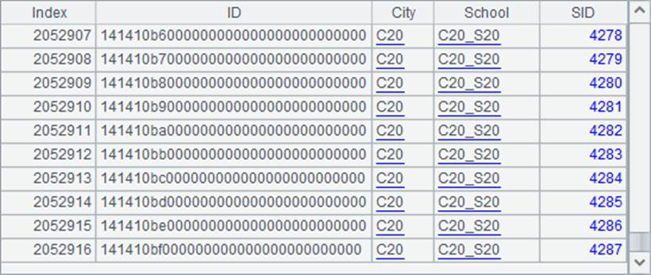
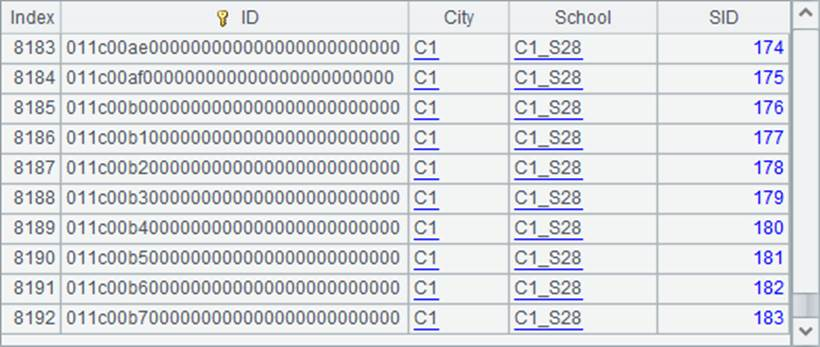
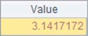
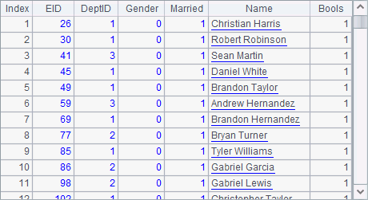
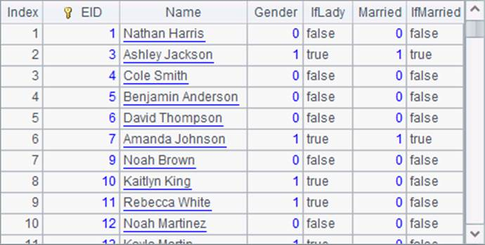
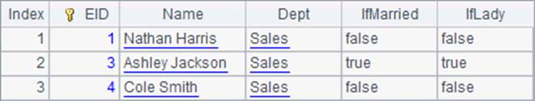
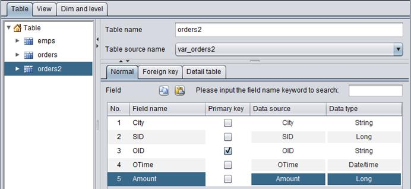

11.8.3 Defining a DQL table and querying in DQL
After a pseudo table is defined using DQL tool, we can create a table used in future DQL queries on the DQL interface:

Select Tool->Generate table from pseudo table through the menu bar and generate a DQL table using the defined pseudo table:

Below is the configured DQL table with desired fields:

The data in a DQL table can come directly from a pseudo table or configured row by row by selecting Table source after the table is added in the DQL tool. After a DQL table is defined, we store its metadata as test.glmd. In the table, it is the primary key that identify records uniquely. The key can inherit the primary key of the composite table file from which the pseudo table is generated. In our emps table, a foreign key isn¡¯t set and the fields are called measures.
Now we can perform queries in DQL in the DQL tool. Select Tool->DQL Query on the menu bar and perform a query using a DQL statement on the DQL query window. DQL syntax is similar to simple SQL syntax, as the following shows:

Click ¡°Execute¡± button and then we can view the query result on ¡°Browse data¡± tab:

The DQL tool allows using SQL-like syntax, such as where, as and order by. For instance:

About syntax DQL supports, esProc DQL Tutorial has detailed explanations.
Now we add a pseudo table definition based on a multi-zone composite table:

Set numbers of zone tables of the multi-zone composite table after ¡°Zone¡±. Select a zone field after ¡°Zone column¡±. By default the first field will be used as the user field if ¡°User¡± isn¡¯t set. After the pseudo table is added, we add its definition in the DQL table:

Querying a pseudo table in DQL gets the same result as performing the query through code in esProc:

Similar to SQL, querying all fields in DQL can use the symbol *. Data queried from a multi-zone composite table will also be merged by the first field.
As handling var_orders, now we add the mutli-zone composite table orders2.ctx in the pseudo table definition:
In mutli-zone composite table orders2.ctx, City is the first field. Set SID as the user field. When configruations are done, we set the pseudo table as a DQL table:

Perform the query in DQL query window and get result as follows:

The result is the same as performing the querying in esProc. Data is ordered by the specified user field after they are merged by the first field.